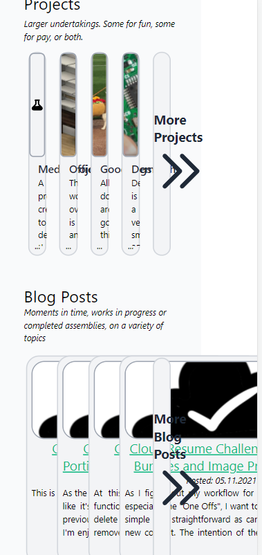
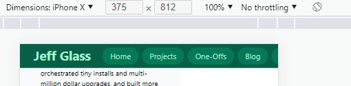
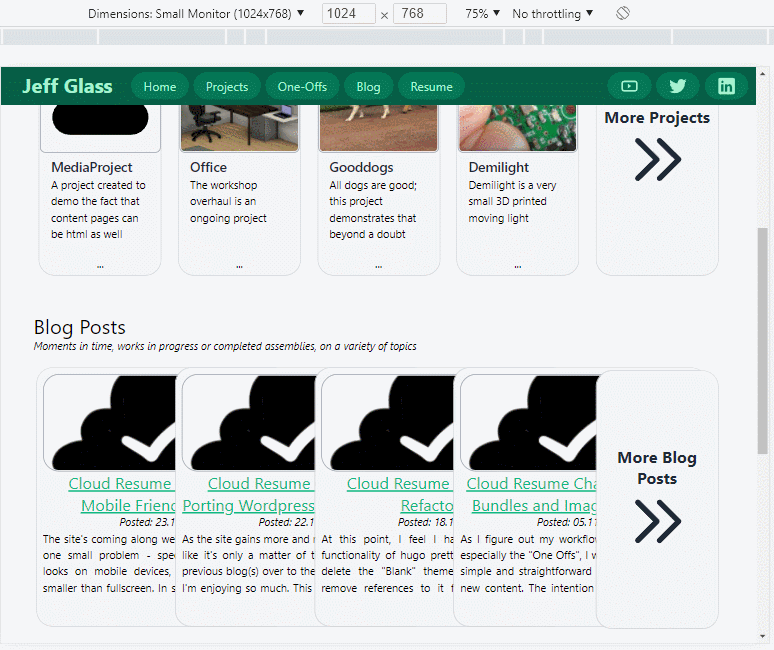
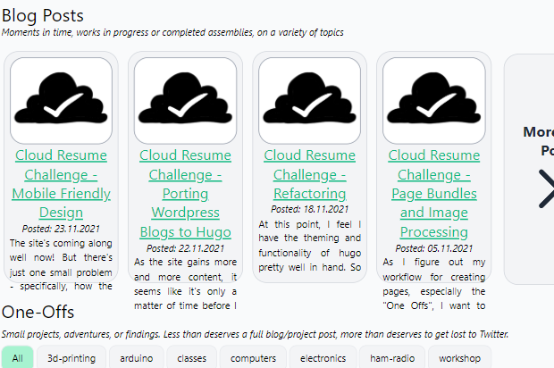
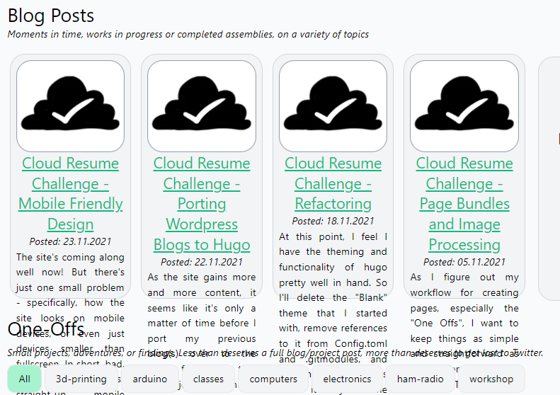
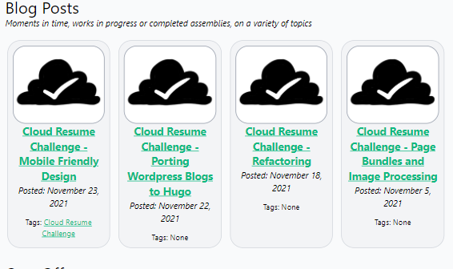
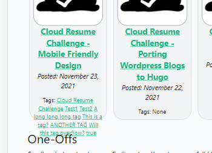
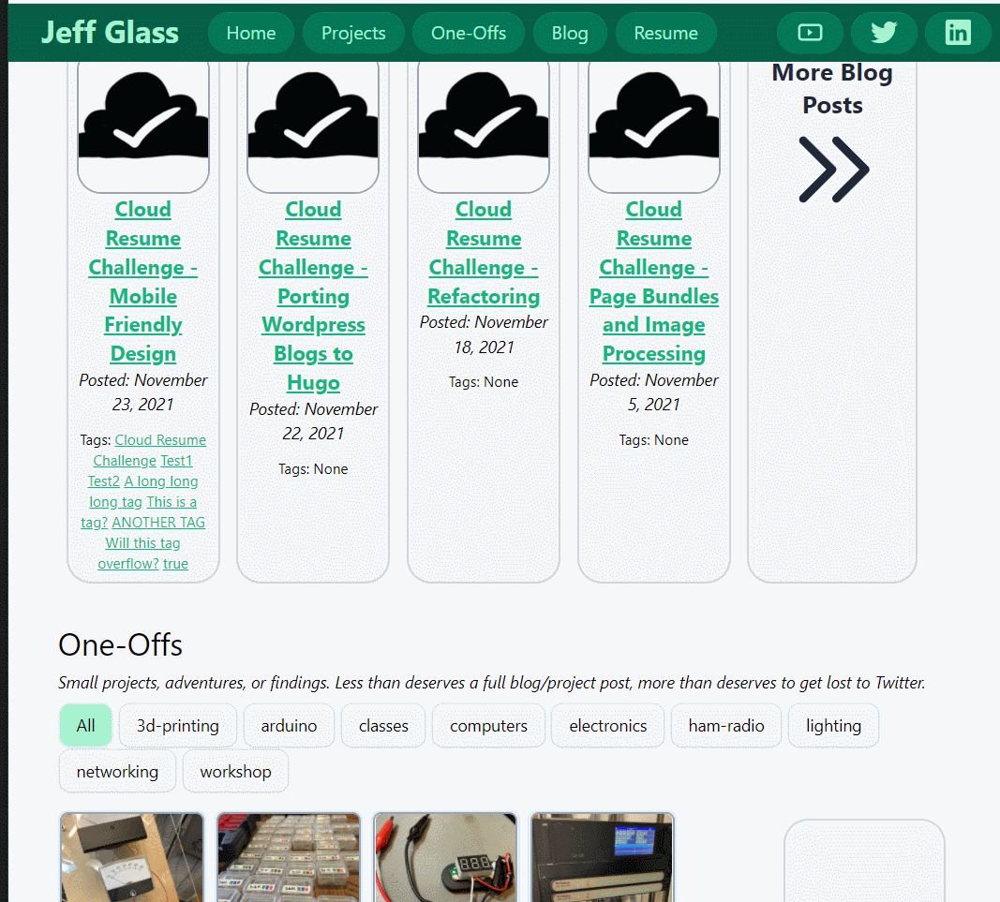
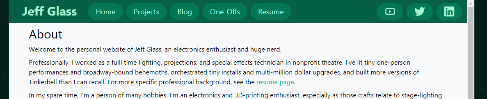

Mobile Friendly Design
The site's coming along well now! But there's just one small problem - specifically, how the site looks on mobile devices, or even just devices smaller than fullscreen. In short, bad.

That design is just straight-up mobile antagonistic.
Thankfully, Chrome's dev tools have a very handy device toolbar that forces the sites dimensions to be that of any of a number of common mobile devices, or allows the user to set a custom screen size. It also enables things like touch/click to scroll, to allow a dev to get the feeling of what the site will be like on a mobile touchscreen. I say "get the feeling" because nothing will quite mimick the actual feeling of holding the site on your hand and interacting with it at arms length; this is more of a tool to explore layouts than UI.

So, let's see how tailwindcss can handle mobile-responsive designs. It seems that I've actually being going at the framework somewhat backward from how tailwind thinks about attributes. Any css attributes that do not have a size selector (sm, md, lg, xl, or 2xl) apply to all sizes of page; any attributes that do have a selector will apply on that screen size and above. So, as I'm going back and shoehorning mobile-friendliness into my site, I'll mostly be applying size selectors (probably lg or xl) to my existing css attributes, then adding new, un-size-tagged attributes that are mobile-appropriate.
Let's start on the homepage (index.html). Even at reasonable large monitor sizes, like those found on quite compact laptops or uses in a larger-resolution setting, we start to see issues created by fixed-width elements and non-responsible flexboxes.

So, let's figure out what we can do about this. I'll start by changing those blog-post cards from w-96 to w-auto, so they automatically shrink in size. That helps, but leaves us with an awkward issue where the text runs off the bottom of the card.

Interstingly, the divs that contain this text already have the 'overflow-hidden' property. If I delete that for the moment, the overflow only gets worse!

Although, now I can see that Hugo is indeed putting the default number of words into each summary (75 I think?) and adding the "read more" link to the end of the next, as I'd expect from my card code:
<article class="flex-grow w-auto">
<div class="p-2 m-1 bg-gray-100 border-2 border-gray-300 rounded-3xl h-96 drop-shadow-xl">
{{ if isset .Params "static_slug" }}
<a href="{{ .Permalink }}"><img id="staticslug" src="{{ .Params.static_slug }}" alt="" class="object-cover w-full border-2 border-gray-400 rounded-3xl h-36"></a>
{{ else if isset .Params "slug_image" }}
{{ $img := (.Page.Resources.GetMatch .Params.slug_image) }}
<a href="{{ .Permalink }}"><img src="{{ $img.RelPermalink }}" alt="" class="object-cover w-full border-2 border-gray-400 rounded-3xl h-36"></a>
{{ else }}
<a href="{{ .Permalink }}"><img src="/svg/notfound.svg" class="object-cover w-full border-2 border-gray-400 rounded-3xl h-36"></a>
{{ end }}
<h1 class="text-center"><a href="{{ .Permalink }}" class="text-2xl">{{ .Title }}</a></h1>
<p class="italic text-center">Posted: <time datetime="{{ .Date.Format "2006-01-02T15:04:05" }}">{{ .Date | time.Format ":date_long" }}</time></p>
<div class="h-24 col-span-2 text-justify">
{{ if .Slug}}
{{ .Slug }}
{{ else }}
{{ .Summary }}
{{ if .Truncated }}
<a href="{{ .Permalink }}">Read more...</a>
{{ end }}
{{ end }}
</div>
</div>
</article>I've also starting integrating Hugo's builtin code-highlighting functionality to show blocks of code like this one! The process is getting a bit meta now.
One thing I'm noticing is that I have a number of elements with fixed heights in these blog-post cards - the card itself is h-96, and the images are all h-36 - but the <a> tag title, the <p> tag for the posting date, and the actual summary text are variable in size. And for some reason, aren't being constrained to wihin the div that surrounds the whole thing.
Changing the summaryLength variable in the general Hugo config (config.toml, in my case) does change the number of words included. It seems to really want to split on a punctuation mark though.
It was at this point that I decided on a change of tactics. I already have the option in the snippet above to include a custom 'slug' of text for each post, which will always be the priority for each summary. If that's not there, I want to default to the auto-generated summary of each post.... but is that really the right behavior on the homepage? Perhaps simply the title, post date, and a list of associated tags is more correct? I'll borrow from code from how tags are displayed on posts themselves (in layout/post/single.html) to try that out.

I think this is better, but not great? Especially since I think if I add too many tags it'll overflow again...

Yes, yes it does overflow.
Perhaps I need a slightly less brute-force approach. Let's see how somewhere like Tailblocks.cc does it. It seems they have a 'flex-flex' wrap' dive, with simple divs underneath it that are md:w-1/3 with no width qualifiers at smaller sizes?
After mucking around with some margin and padding settings, this setup does seem to essentially work. There are (currently 5) blog cards side-by-side on the main page whne the screen is above a certain size; below that, they snap to being one above the other.

Remembering to add 'w-auto' in all the right places fiex that one "refactoring" blog post card that's too small.
We can do the same thing to the project cards as well. There's still some minor formatting errors, but so far this is basically working. And since the list pages are all flexbox based, they look not-too-shabby when the screen width gets smaller.
Mobile Menu
The navbar, as designed, isn't particularly mobile-friendly. It isn't even small-monitor friendly. But we can use some basic css and Javascript to fix that. Using a combination of tailwinds' responsive tags, and some Javascript to show and high menu's on various clicks, we can implement three different versions of the navbar for large, medium, and smaller screens.
